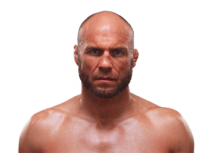

Randy Couture es un icónico peleador estadounidense de MMA, conocido por su dominio en wrestling y su capacidad estratégica en el octágono. Nació el 22 de junio de 1963 en Everett, Washington, Estados Unidos. Ha sido campeón en las divisiones de peso pesado y semipesado de UFC y uno de los pilares del MMA moderno.

Otros que podrían interesarte: